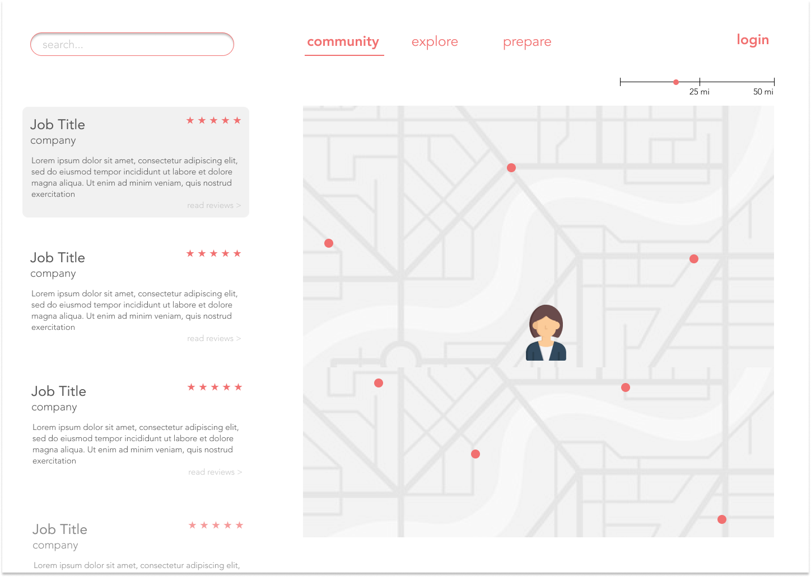
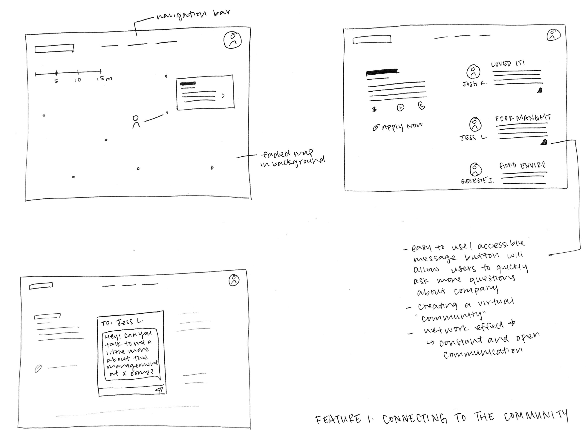
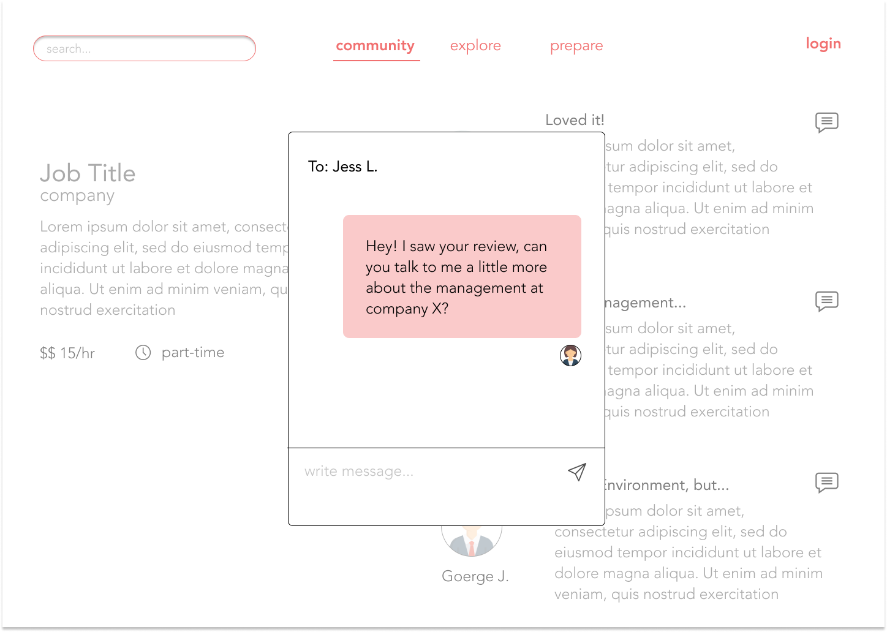

As a research assistant within the Human-Computer Interaction Institute, I worked with Professor Maria Tomprou and Dian Lee to design a tool able to help low-resourced populations better manage their careers.
I did background research to produce an appropriate interview protocol, interviewed key stakeholders, analyzed qualitative and quantitative data, and contributed to the designs.

GOALS
We wanted to identify the main pain points that are preventing low-resourced populations from finding their most fit employment. We hope to reduce these barriers by identifying resources that can help them reach self-sufficiency and help this population:
METHODOLOGY
Sample
Our sample consisted of multiple different populations:
Procedure
We drafted multiple interview protocols each tailored to each of the populations mentioned above to answer specific questions:
RESULTS
Analysis: Tools Used in the Job Search Process
Based on interview responses, I analyzed popular technological resources our sample used during their job search process:

The most widely used tools within our sample were free and online platforms. Given the familiarity and accessibility of these resources, we decided that our tool should be a free online platform as well.
Interview Analysis
We began noting patterns between interviews after consolidating all the quantitative data.

With both quantitative and qualitative data in mind, we settled on three main features for our online platform. It will:
Personas
We created three personas and storyboards to depict the main features of the website.


Storyboarding
Connecting to the Community: This feature provides individuals with a virtual support system.

Finding Meaningfulness: This feature continuously encourages individuals to find their true passion - something that really excites them!

Promoting Marketability: Our tool will also help individuals feel more prepared and confident going into this uncertain period in their career paths.

SOLUTION
This research led to the beginning stages of prototyping our solution. I focused on the community feature:



DESIGN CONSIDERATIONS
PERSONAL TAKEAWAYS